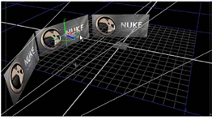

You can merge objects and move them together as a group. To do so, you need to insert MergeGeo and TransformGeo nodes after the objects. The MergeGeo node first merges the objects together, after which you can use the controls of the TransformGeo node to move the merged objects in the 3D space. You can also use the TransformGeo node to constrain objects, as you may notice later in this tutorial.
To merge the three card objects together, right-click on the Card1 node and select 3D > Modify > MergeGeo. This inserts a MergeGeo node between Card1 and Scene1. Disconnect the Card2 and Card3 nodes from the Scene node and connect them into the MergeGeo node. Then, right-click on the MergeGeo node and select 3D > Modify > TransformGeo. Your node tree should now look like the following:
On the TransformGeo nodes, you see multiple connectors. The connector without a label should be attached to a geometry object or a MergeGeo node. The other connectors act as constraints on the connected object’s position.
When a camera or object is connected to the optional look connector, the TransformGeo node adjusts the rotation so that the object’s z-axis always “points” to the camera or object.
The axis connector can be used to link the current object to the position, rotation, and scale of a special 3D object called the Axis node. If you’ve worked with other 3D applications, you know the Axis node as a “null” or “locator” object.
You are still working with the “Setting Up a 3D System” node tree. The following steps show how you can move the merged nodes, and also how to make objects “look” at the camera and other objects.
| 1. | Click on the TransformGeo1 node to select it. Its control panel should also be open and you’ll see its transform handles in the Viewer. |
| 2. | Drag the handles to move all the cards merged with the MergeGeo node. |
| 3. | Press the Ctrl or Command key and drag the rings to rotate the cards as a group. |

| 4. | In the TransformGeo1 control panel, drag the uniform scale slider to increase the size of the entire group of cards. |
| 1. | Drag the look connector from the TransformGeo1 node onto the Camera1 node. |
In the Viewer, you’ll now see the TransformGeo1 node is constrained to the location of the camera.
| 2. | Select and move Camera1 in the Viewer window. As you do so, the three cards controlled by the TransformGeo1 node rotate to “look at” the camera location. |
Why is this useful? Let’s assume you have a 2D matte painting mapped to a card in your scene. The “look” option ensures that the plane of the painting always faces the camera, regardless of the camera position, and maintains the illusion depicted by the painting.
Before you move on, disconnect the TransformGeo node’s look connector from the camera.
|
|